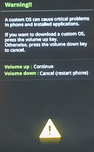
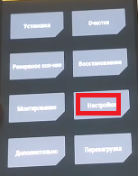
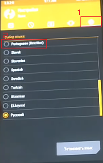

Realizar root no Samsung Galaxy J320M com android 5.1.1 e instalar Recovery TWRP

Acabou de por as mãos em um novo aparelho e não vê o momento de liberta-lo desse mundo sem cor sem asseecibilidade? Quer remove-lo das garras da Samsung e dar-lhe o total acesso de customiza-lo ao seu modo? pois é meus queridos, para que isso seja possivel o passo fundamental é realizar root, ele é a porta de entrada para o mundo das customizações e acessos que o usuário comum não tem. então vamos ao que intereça e deixar de enrolação.
Para esse tutorial você irá precisar:
Após ter baixado os arquivos listados acima instale os Drives USB da Samsung e extraia o Odin.rar e o Twrp.rar.
-
Para darmos inicio vamos ativar o modo desenvolvedor. Com o aparelho em mãos vá em Configurações > Sobre e Info. Software nesta seção clique 7 vezes em Número de compilação.
Volte as configurações e clique em "Opções do desenvolvedor" agora ative a "Depuração por USB" e o "Desbloqueio por OEM".
Feito o passo anterior conecte o J3 ao pc e aguarde que os drives do mesmo sejam instalados.
No pc vá na pasta que foi realizado o download dos arquivos e transfira o arquivo "SuperSu.zip" para a memória interna do aparelho.
Remova o cabo USB e desligue o aparelho.
Vamos por o Galaxy J3 em modo Download, para isso pressione ao mesmo tempo as teclas de "VOL -", "HOME" e "POWER" por alguns segundos, ao aparecer uma nova tela pressione a tecla de "VOL +" para confirmar.
Instalar Recovery Customizada
Conecte o aparelho ao pc e Abra o Odin, em PDA selecione o arquivo "TWRP.MD5" e clique em "START".
Quando a instalação da recovery terminar o dispositivo irá reiniciar então aguarde.
Após o aparelho ligar, desligue-o. Com o J3 desligado vamos entrar na recovery Customizada então pressione ao mesmo tempo as teclas de "VOL +", "HOME" e "POWER" por alguns segundos.
Ao abrir a recovery primeiramente iremos alterar o idioma para o Português, faça igual as imagens a seguir.
Clique na penúltima opção do lado direito.
Clique no globo e escolha o idioma Português e confirme.
-
Instalar Root
Volte a página inicial e clique em Instalar, desça até o fim dos arquivos e selecione o arquivo "SuperSu.zip" que passamos para a memória interna a passos anteriores, para instalar "Deslize para confirmar flash" e aguarde.
Após uns 30 a 40 segundos mais ou menos clique em "Limpar o cache/Dalvik" após isto clique em Reiniciar e Não instale. Com isso o Samsung Galaxy J3 J320 já estará com acesso de super usuário - root e recovery customizada para fazeres as alterações que lhe forem mais pertinentes então use o root com moderação.
Então se obteve problemas com alguns dos passos listados acima, fique tranquilo a deixar os seus comentários logo abaixo.